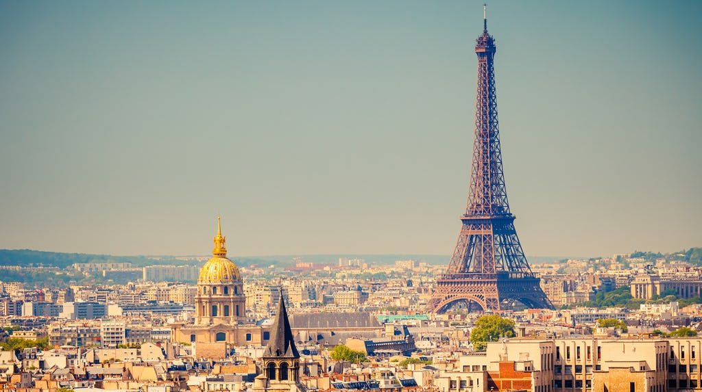

Paris
Paris, the cosmopolitan capital of France, is one Europe's largest cities, with 2.2 million people living in the dense, central city and almost 12 million people living in the whole metropolitan area. Located in the north of France on the river Seine, Paris has the well deserved reputation of being the most beautiful and romantic of all cities, brimming with historic associations and remaining vastly influential in the realms of culture, art, fashion, food and design. Dubbed the City of Light (la Ville Lumière) and Capital of Fashion, it is home to the world's finest and most luxurious fashion designers and cosmetics, such as Chanel, Dior, Yves Saint-Laurent, Guerlain, Lancôme, L'Oréal, Clarins, etc.

A large part of the city, including the River Seine, is a UNESCO World Heritage Site. The city has the second highest number of Michelin restaurants in the world (after Tokyo) and contains numerous iconic landmarks, such as the world's most visited tourist site the Eiffel Tower, the Arc de Triomphe, the Notre-Dame Cathedral, the Louvre Museum, Moulin Rouge, and Lido, making it the most popular tourist destination in the world with 45 million tourists annually.
Reaching By plane
Charles de Gaulle International Airport (Roissy) IATA: CDG. The major hub airport to the north-east of the city. It's notoriously confusing, so allow plenty of time for transfers. There are three terminals: Terminal 1, Terminal 2 (which is huge and subdivided into 2A through 2G), and Terminal 3 (formerly T9). The newest exception is terminal 2G which is a separate building and is only reachable via navette/bus in 10-15min (bus leaves every 20min) so allow extra time. The free CDGVAL shuttle train connects the terminals together. When you arrive at CDG, you should note what terminal you arrived at (2A, 2D, etc.), because when you come back to the airport to depart at the end of your trip, the RER subway train makes two stops at CDG to cover the three terminals, but there are few indications of which airlines are at which terminals. Have a close look at your air ticket to figure out which terminal you are departing from. Air France and associates leave from Terminal 2. The RER B has the airlines serviced by each terminal on a not so obvious chart posted by the door of the train. Terminal 1 Say that again, please? The RER B station named "Aeroport Charles de Gaulle 1" is a misnomer - it actually serves Terminal 3, not Terminal 1. However, the CDGVAL train (free of charge) links Terminals 1, 2, and 3.
There are quite a few points with power outlets specifically for charging passengers' laptops/mobiles, both down by the food court and by some of the gates. Note- Non-shared (limo service) transfers are also available and can be booked on-line: T2 Transfer offers CDG airport transfers to Paris city centre for up to 4 people for €60. Top Paris Transfer offers CDG transfers to Paris city centre for up to 4 people for €60. Blacklane offers airport transfers in Mercedes E-Class, BMW 5 Series or similar, for three people to/from CDG or Orly to/from central Paris for around €60 and €70. Cab Service Prestige offers a Mercedes E transfer for up to 4 people for €150 from CDG to the city Easy Private Taxi offers a sedan from CDG to the city up to 2 people for €60, up 4 people for €70 and up to 8 people for €90
LeCab offers a sedan to and from CDG for up to 4 people for €48, and to and from Orly for up to 4 people for €37 Paris airport shuttle offers a cdg to and from CDG for up to 4 people for €48, and to and from Orly for up to 4 people for €37 Private Car Service Paris offers luxury Mercedes Class E and S airport pickups from CDG and Orly to the city or Hotel for €120 and private chauffeur services for €70. TaxiLeader.net offers CDG to and from Paris for €48 1-3 people, Orly to and from Paris €55 1-3 people AbiTransport offers for group and family, CDG to and from Paris from €70 (1-4 people) to 90€ (8 peoples) , DisneyLand paris to and from CDG from €69 (1-4 people) to 93€ (8 peoples) Do not get into a taxi which is not clearly marked "taxi." Taxi services between CDG and Paris should not exceed €150; scammers will try to charge you €225 or more.
By Train
Paris is well connected to the rest of Europe by train. There is no central station serving Paris and the six different stations are not connected to each other. You will probably want to know in advance at which station your train is arriving, so as to better choose a hotel and plan for transport within the city. Gare du Nord, (10th), Métro: Gare du Nord - TGV trains to and from Belgium, the Netherlands, and Cologne, Germany (Thalys), and the United Kingdom (Eurostar) and regular trains from Northern Europe. Passengers coming in by train from Charles de Gaulle Airport can also get off here. Gare d'Austerlitz, (13th), Métro: Gare d'Austerlitz - regular trains to and from the centre and southwest of France (Orléans, Limoges, Toulouse the long way), Spain and Portugal and arrival of majority of the night trains. Gare de l'Est, (10th), Métro: Gare de l'Est - ICE/TGV to and from Luxembourg, Saarbrücken, Kaiserslautern, Frankfurt, and Stuttgart, Munich in Germany. Gare de Lyon, (12th), Métro: Gare de Lyon - regular and TGV trains to and from Southern and eastern France: French Alps, Marseille, Lyon, Dijon, Switzerland (by TGV Lyria): Geneva, Lausanne, Neuchatel - Bern - Interlaken, Basel - Zurich, and Italy. Gare de Bercy, (12th), Métro: Bercy. Overnight trains from and to Italy and regular trains to Auvergne. Gare St Lazare, (8th) Métro: St-Lazare - trains to and from Basse-Normandie, Haute-Normandie. Gare Montparnasse, (15th), Métro: Montparnasse-Bienvenüe - TGV and regular trains to and from the west and south-west of France (Brest, Rennes, Nantes, Bordeaux, Toulouse the fastest way and Spain).